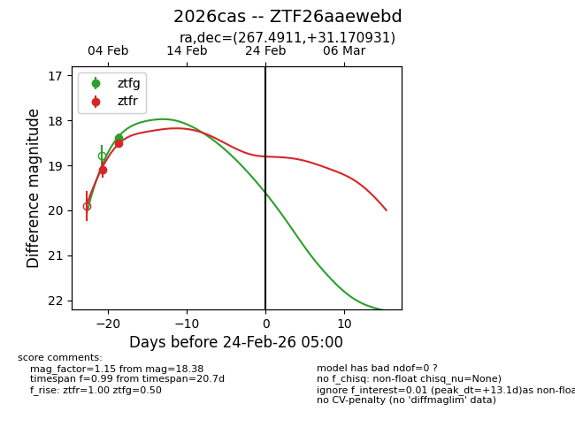
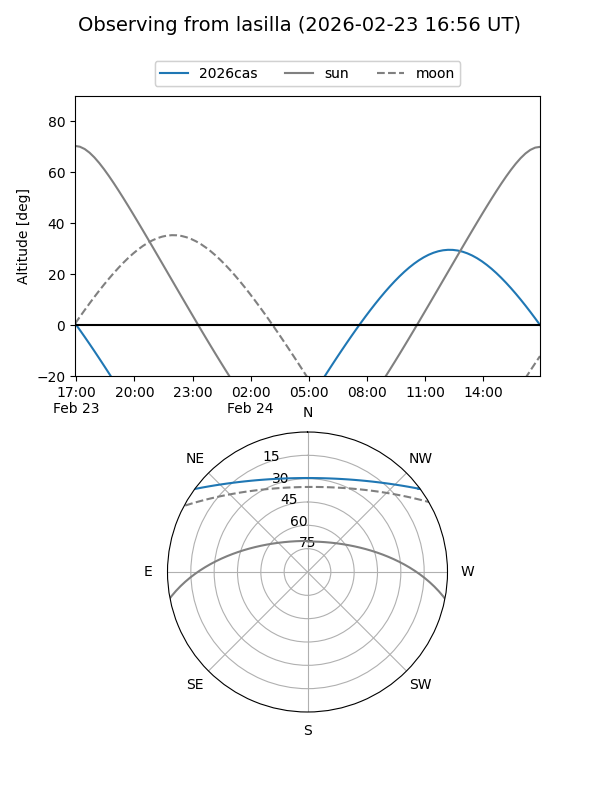
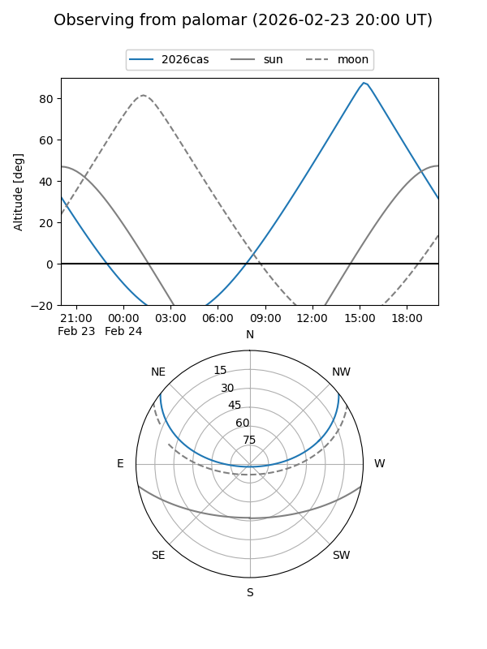

2026cas
Target 2026cas at 2026-02-24 09:08
Aliases and brokers:
FINK: link
Lasair: link
ALeRCE: link
TNS: link
YSE: link
alt names
ZTF26aaewebd (ztf,fink_ztf)
2026cas (tns,yse)
Coordinates:
equatorial (ra, dec) = 267.4911,+31.17093
equatorial (HMS+DMS) = 17:49:57.87,+31:10:15.35
galactic (l, b) = (56.3453,+25.96544)
Flags:
Photometry:
last ztfg=18.38, ztfr=18.51
1 ztfg, 2 ztfr detections
Lightcurve

Visibility


Additional plots